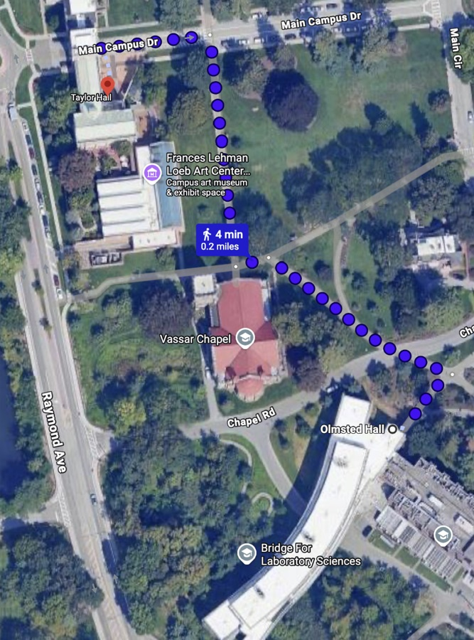
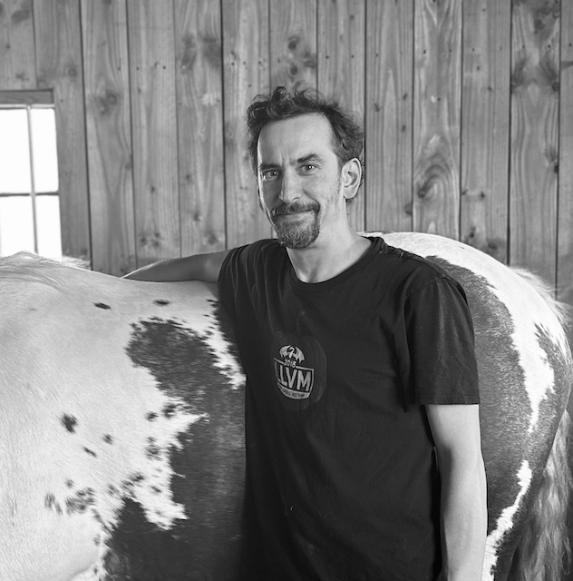

Mid-Hudson Valley TechMeet
Innovate. Connect. Inspire.
3rd Annual TechMeet · 2026
Friday, November 13, 2026
Vassar College · Poughkeepsie, New York
Innovate. Connect. Inspire.
Vassar College · Poughkeepsie, New York
The Mid-Hudson Valley TechMeet is a showcase of college student technology projects. All posters are presented by college students, and educators, researchers, and industry professionals from across the Hudson Valley join them to exchange ideas and build connections that strengthen our region's technology ecosystem. Join us for an afternoon of technology, innovation, networking, and community engagement.
The TechMeet is a poster session designed to give college students an opportunity to showcase their work, exchange ideas with peers, and connect with faculty, researchers, and industry professionals.
November 13, 2026
2:00 – 7:00 PM
Bridge for Laboratory Sciences
Vassar College
Thank you to the college students across the Hudson Valley who submitted abstracts for the 3rd Annual TechMeet.
Abstract submissions closed: Thursday, November 5, 2026
Acceptance notifications: November 6, 2026
Abstract submission is now closed. Join us on November 13 to see the posters!
All participants must register to attend MHV TechMeet 2026. Registration is free and open to students, faculty, and industry professionals. Students presenting posters must also complete the Event Registration form.
The registration form collects your contact information, affiliation, and participation preferences (presenting, networking, dietary needs). If you submitted an abstract, your abstract ID will be linked to your registration. You will also provide the name spelling for your certificate of participation.
Registration deadline: November 10, 2026
If you have difficulty with the form, email mhvtechmeet@gmail.com.
We are seeking volunteer judges and mentors from industry, academia, and research to evaluate student poster presentations and provide constructive feedback. Judges play a vital role in recognizing student achievement and inspiring the next generation of Hudson Valley technologists.
Judges are assigned 3–5 posters based on their technical background and availability. Judging takes place during the poster session (2:00 – 4:00 PM). Judges should plan to spend approximately 2 hours evaluating student posters and providing feedback. Completing the judges form also registers you for the event — no separate registration is needed.
AI / Machine Learning · Software Engineering · Cybersecurity · Data Science · Hardware / EDA · Robotics / IoT · Cloud Computing · Quantum Computing · Business / Entrepreneurship
Judge applications due: November 3, 2026
Questions? Email mhvtechmeet@gmail.com.
Bridge for Laboratory Sciences Building
Vassar College
Poughkeepsie, NY 12601
The invited speaker talk and the awards ceremony are in Taylor Hall, Room 203, a short walk from the Bridge building (about 4 minutes, 0.2 miles).
Taylor Hall 203 GPS coordinates: 41°41'10.9"N, 73°53'51.6"W
Google Maps walking route from the Bridge building to Taylor Hall

Attendees can park in the South Lot. Please avoid any areas marked as reserved.
| 2:00 – 2:30 | Poster Setup |
| 2:30 – 4:00 | Judging |
| 4:00 – 5:00 | Networking and Public Viewing of Projects |
| 5:00 – 6:00 | Invited Speaker Talk |
| 6:00 – 6:30 | Awards Ceremony |
| 6:30 – 7:00 | Informal Networking |

Slava Pestov
Compiler Developer, Apple Inc.
Talk: "Swift: A High-Level Systems Language"
Abstract
While the field of programming language design and implementation is as old as computing itself, it is far from being a solved problem. With this talk, I will highlight some recent developments and hope to get you interested in making your own contribution!
Traditionally, programmers faced a choice between high-level and low-level languages. High-level languages give up some performance to gain safety and expressivity, while low-level languages offer precise control over execution at the cost of making it more difficult to write correct code. In the last decade or so, a new crop of "high-level systems" languages have emerged—with Swift being one example—to try to bridge this gap between high and low-level programming. To achieve their goals, these languages go beyond the topics covered in a typical compilers course.
I will focus on two topics in my talk. First up, to support various developer tools, we must be able to answer questions about parts of the user’s program without compiling the whole thing. This requires a re-think of the classic "pipeline" of parsing, analysis, and code generation. Second of all, instead of relying on runtime checks to enforce safety, high-level systems languages have the compiler prove various properties about the user's code at compile time. The art of balancing type annotation burden with convenience brings us directly to key concepts from theoretical computer science, such as decidability, and NP-hardness.
About the speaker
Slava Pestov is a compiler developer at Apple, where he has spent over a decade as one of the most active contributors to the Swift compiler. His work spans the type checker, Swift's stable ABI, library evolution, and a new generics implementation based on term rewriting — the Requirement Machine. He is also the author of Compiling Swift Generics, a book on the Swift generics implementation.
Before Apple, Slava led the development of the Factor programming language and worked at Google on firmware and Linux device drivers for data center storage. He is also the original author of jEdit, one of the earliest programmer's text editors with a plugin package manager.
39 student research projects were presented at the poster session, in four categories:
| AI & Data Science | 10 posters |
| Hardware & Physical Systems | 10 posters |
| Human-Centered Technology | 9 posters |
| Software, Networks & Security | 10 posters |
Congratulations to all of the MHV TechMeet 2026 award winners. Awards are listed by category: 1st place, 2nd place, and the Special Judge award.
| Award | Title | Author(s) | Faculty | University | Certificate |
|---|---|---|---|---|---|
| 1st Place | Seeing the Stroke: Minimal-Input Models for Badminton Shot Detection and Classification | Vishnu Lakshman | Josh de Leeuw | Vassar College | Download |
| 2nd Place | Evaluating the Threat of AI Impersonation in Online Behavioral Experiments | Aiden Brown, Ludan Yuan | Josh de Leeuw | Vassar College | Download |
| Special Judge Award | Evaluating the Threat of AI Impersonation in Online Behavioral Experiments | Aiden Brown, Ludan Yuan | Josh de Leeuw | Vassar College | Download |
| Award | Title | Author(s) | Faculty | University | Certificate |
|---|---|---|---|---|---|
| 1st Place | Using Photogrammetry to Measure the Fidelity and Roughness of 3D Microstructures Made by Two-Photon Polymerization | Jaiden Johnson, Avery Craften, Zihan Chen, Lyric Mateo | Christopher LaFratta | Bard College; Columbia University | Download |
| 2nd Place | Performing an electric vehicle conversion (EVC) on a utility cart (Toro Workman 2100) and a motorcycle (Yamaha FZ600) to reduce greenhouse gas emissions | Leigh Tarfurth, Stephen Van der Wiele, Angel Colon, Anthony Guaman | Professor Robert Roller | Bergen Community College | Download |
| Special Judge Award | Engineering a Humanoid Robotic Arm | Klaus Misko, Samip Paudel, Maria Petroiesc | Ken Livingston | Vassar College | Download |
| Award | Title | Author(s) | Faculty | University | Certificate |
|---|---|---|---|---|---|
| 1st Place | Quantifying Long-Term Impacts of Sex-Trafficking on Individual Survivors | Bethany Adler, Ricardo Aguilar, Gavin Esperanza | Thomas Sharkey | SUNY New Paltz; Kennesaw State University; Virginia Tech | Download |
| 2nd Place | A Flip-Mirror Robotic Companion for Offline Learning and Emotional Support for Girls in Afghanistan | Dunya Artal | — | Bard College | Download |
| Special Judge Award | A Flip-Mirror Robotic Companion for Offline Learning and Emotional Support for Girls in Afghanistan | Dunya Artal | — | Bard College | Download |
| Award | Title | Author(s) | Faculty | University | Certificate |
|---|---|---|---|---|---|
| 1st Place | MAQCC: Multi-path Adaptive Queue-aware Congestion Control with Scheduler-Based Weight Export for MPTCP | Andrew Gomes, Arya Shrestha | Sandhya Aneja | Marist University | Download |
| 2nd Place | Running a Student-Administered Private Cloud: VMware Infrastructure at Marist’s ECRL | David Galindo Delgado, Katelyn Viglietta, Nicholas Margiotto | Chris Algozzine | Marist University | Download |
| Special Judge Award | MAQCC: Multi-path Adaptive Queue-aware Congestion Control with Scheduler-Based Weight Export for MPTCP | Andrew Gomes, Arya Shrestha | Sandhya Aneja | Marist University | Download |
Thank you to every student who presented a poster at MHV TechMeet 2026. Participation certificates are listed by category, one per poster.
| ID | Title | Author(s) | Faculty | University | Certificate |
|---|---|---|---|---|---|
| AID-01 | Seeing the Stroke: Minimal-Input Models for Badminton Shot Detection and Classification | Vishnu Lakshman | Josh de Leeuw | Vassar College | Download |
| AID-03 | Comparing Molecular Representations for PFAS Bioactivity Prediction: From Fingerprints to Graph Neural Networks | Cesar Le | Hyuna Kwon | SUNY New Paltz; SUNY Binghamton | Download |
| AID-04 | Evaluating the Threat of AI Impersonation in Online Behavioral Experiments | Aiden Brown, Ludan Yuan | Josh de Leeuw | Vassar College | Download |
| AID-05 | Improving Loan Prediction Through Database Integration | Tamana Sultani | Emma Benser | Bard College | Download |
| AID-06 | Applying Sound Convolutional Neural Network (CNNs) to the Characterization of Wind Farm Noise Samples | Berhana Denis, Jacob Mettle | Dr. Heather Lai | SUNY New Paltz | Download |
| AID-08 | Flow: jsPsych Multi-Agentic Replication, Implementation, and Evaluation of Psychological Research Experiments | Tung Nguyen | Joshua de Leeuw | Vassar College | Download |
| AID-09 | Automating Cross-Survey Analysis of Political Attitudes Using Bayesian Networks and Large Language Models | Grace Stoner, Rachel Sandford, Barbara Carvalho | Reza Sadeghi | Marist University | Download |
| AID-10 | Identifying Economic Opinion Communities Using Network Science | Gabriela Ramon, Rachel Sandford, Barbara Carvalho | Reza Sadeghi | Marist University | Download |
| AID-11 | A Dashboard for Monitoring First-Semester First-Year Student Attrition Risk | Chase Taylor, Connor Fleischman | Eitel Lauria | Marist University | Download |
| AID-12 | Applied ML for the LIGO baffle diffraction optimization | Artem Protsenko, Adrian Helmling-Cornell | Antonios Kontos | Bard College | Download |
| ID | Title | Author(s) | Faculty | University | Certificate |
|---|---|---|---|---|---|
| HPS-01 | Implementation of Artificial Intelligence in Tandem with EEG for a Cost-Effective BCI Device | Ian Andujar, David Meyer | Yuliya Daroshka | Bergen Community College | Download |
| HPS-02 | Design and Investigation of Quaternary Heusler Materials for Spintronic Applications with First-principles Computational Methods | TianaMarie Allen, Didare Kaya, John Dickson, Oliya Ettehadieh | Neel Haldolaarachchige | Bergen Community College | Download |
| HPS-03 | DT-10: The 10 Meter Drop Tower | Kacper Staszalek, Sol Velecela, Minh Tam Pham, Endri Dobrovoda | Dr. Joseph Sivo | Bergen Community College | Download |
| HPS-04 | Performing an electric vehicle conversion (EVC) on a utility cart (Toro Workman 2100) and a motorcycle (Yamaha FZ600) to reduce greenhouse gas emissions | Leigh Tarfurth, Stephen Van der Wiele, Angel Colon, Anthony Guaman | Professor Robert Roller | Bergen Community College | Download |
| HPS-05 | Self Balancing Electric Unicycle | Evan Kharlamb | — | SUNY New Paltz | Download |
| HPS-07 | Topologically Protected Quantum Memory | Yaroslav Valchyshen | Abhinav Prem | Bard College | Download |
| HPS-08 | ChloroSync - A Scalable Plant Monitoring System | Tessa Brown | Chirakkal Easwaran | SUNY New Paltz | Download |
| HPS-09 | Specimen Design for Torsion Testing of 3D-Printed Small-Scale Wind Turbine Blades | Brandon Gardner, Elton Canafe | Rachmadian Wulandana | SUNY New Paltz | Download |
| HPS-10 | Using Photogrammetry to Measure the Fidelity and Roughness of 3D Microstructures Made by Two-Photon Polymerization | Jaiden Johnson, Avery Craften, Zihan Chen, Lyric Mateo | Christopher LaFratta | Bard College; Columbia University | Download |
| HPS-11 | Engineering a Humanoid Robotic Arm | Klaus Misko, Samip Paudel, Maria Petroiesc | Ken Livingston | Vassar College | Download |
| ID | Title | Author(s) | Faculty | University | Certificate |
|---|---|---|---|---|---|
| HCT-01 | Change Matters: Development of An Educative Chemistry Videogame | Aryan Patel, Angel Gonzalez, Samuel Brown, Chris Oh | Michael Martinez Vidals | Bergen Community College | Download |
| HCT-02 | Examining Human Labour behind Human-in-the-Loop systems: Mapping power, exploitation and accountability | Shiraz Kirmani | Annabel Rothschild | Bard College | Download |
| HCT-03 | Automated Per-Line Voice Generation for Visual Games Using Text-to-Speech Software: A Low-Cost Approach for Independent Game Developers | Tianyu Chen, Yijie He | Peter Lemieszewski | Vassar College | Download |
| HCT-04 | Quantifying Long-Term Impacts of Sex-Trafficking on Individual Survivors | Bethany Adler, Ricardo Aguilar, Gavin Esperanza | Thomas Sharkey | SUNY New Paltz; Kennesaw State University; Virginia Tech | Download |
| HCT-06 | Improving Physical Models for Thunder Sound Synthesis | Paul Mifsud | Emma Benser | Bard College | Download |
| HCT-07 | AI-Powered Persona Chatbots: An Interactive Approach to Psychology Education and Empathy Development | Sana Seth, Nick Barragato, Sean Smith, Sunny Miah | Jami Cotler | Siena University | Download |
| HCT-08 | A Flip-Mirror Robotic Companion for Offline Learning and Emotional Support for Girls in Afghanistan | Dunya Artal | — | Bard College | Download |
| HCT-09 | Testing the Crypto-Native Assumption: Cryptocurrency Adoption, Trust, and Barriers Among College-Aged Adults | Prisha Satish | Bowu Zhang | Marist University | Download |
| HCT-10 | Land, Sea, and Sky: A Gamified Approach to Assessing and Developing Teamwork | Mehmet Berk Meral | — | Vassar College | Download |
| ID | Title | Author(s) | Faculty | University | Certificate |
|---|---|---|---|---|---|
| SNS-01 | What's Your Type: A SwiftSyntax Implementation of Qualified Name Lookup | Filip Sakellariou | Hannah Gommerstadt | Vassar College | Download |
| SNS-02 | MAQCC: Multi-path Adaptive Queue-aware Congestion Control with Scheduler-Based Weight Export for MPTCP | Andrew Gomes, Arya Shrestha | Sandhya Aneja | Marist University | Download |
| SNS-03 | Limitless Appeal: Proving Mathematical Soundness of Variable Compositions of Data Structures | Tristan Bishop | Ashley Suchy | SUNY New Paltz | Download |
| SNS-04 | Running a Student-Administered Private Cloud: VMware Infrastructure at Marist’s ECRL | David Galindo Delgado, Katelyn Viglietta, Nicholas Margiotto | Chris Algozzine | Marist University | Download |
| SNS-05 | Reinhardt: Safeguard Agentic Coding | Josh Tsen | — | Bard College | Download |
| SNS-06 | Design, Validation, and Automation of an Open-Source Cyber Range for SOC training | Erick Perez, Benjamin Brandt, Ryan Clark, Andrew Pinheiro, Matthew Jones | Dominick Foti | Marist University | Download |
| SNS-07 | Behavior-Based macOS Malware Detection Automation | Wael Shahadeh, Nuriddin Komilov, Tyler Allen, Do Nguyen, Luke Flood | Dominick Foti | Marist University | Download |
| SNS-08 | Relevancy Scoring Determined Through Automated Vulnerability Prioritization | Caitlin Bartman, Andrew Lombardo, Owen Tamasco, Christian Tartaglia | Professor Dominick Foti | Marist University | Download |
| SNS-09 | Onion Peeler: Configuration-Driven Collection and Search Across Surface-Web and Tor Forums | Matthew Ingoglia | Prof. Dominick Foti | Marist University | Download |
| SNS-10 | Onion Peeler: Reconnaissance Automation on the Dark Web | Marissa Ratschki, Miles Byrnes, Awais Razaque, Ethan Perez | Dominick Foti | Marist University | Download |